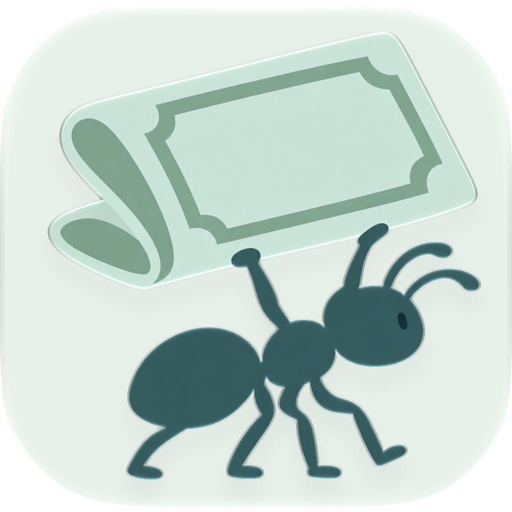
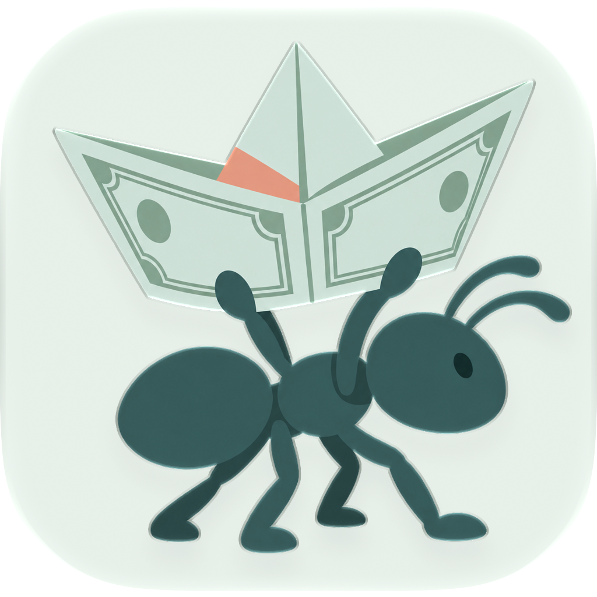
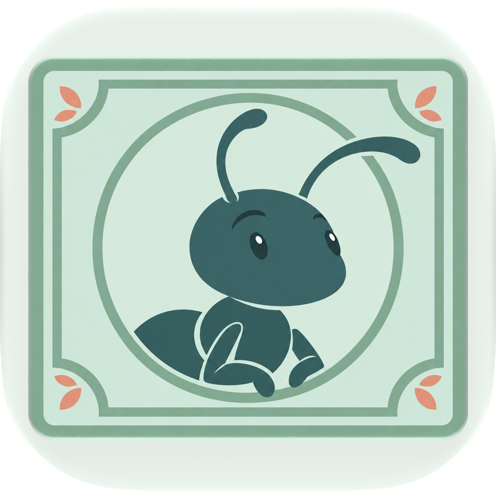

Esplorazioni di personaggio con la stessa palette. Anteprime renderizzate con Icon Composer.

Una piccola formica porta una grande banconota.
Un personaggio curioso abbraccia la banconota.

Una banconota piegata a barchetta.

La formica diventa il personaggio della banconota.
Prototipi non integrati nell’app. La leggibilità nella Home resta da verificare su dispositivo.